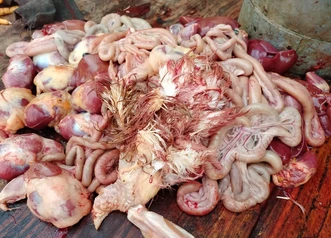
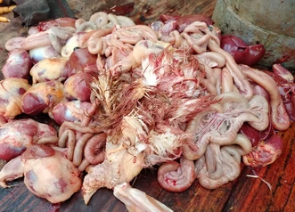
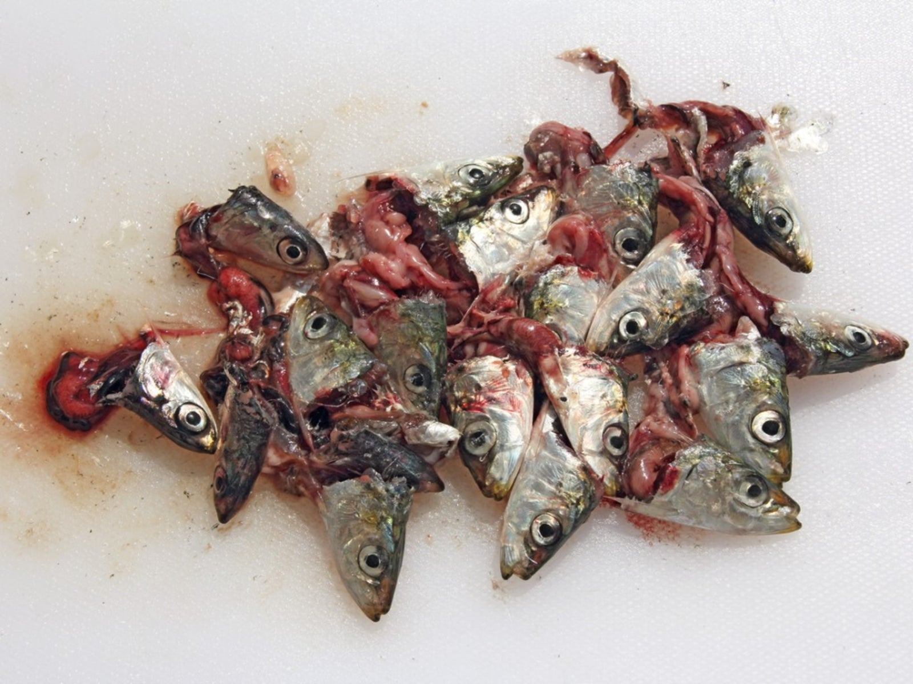
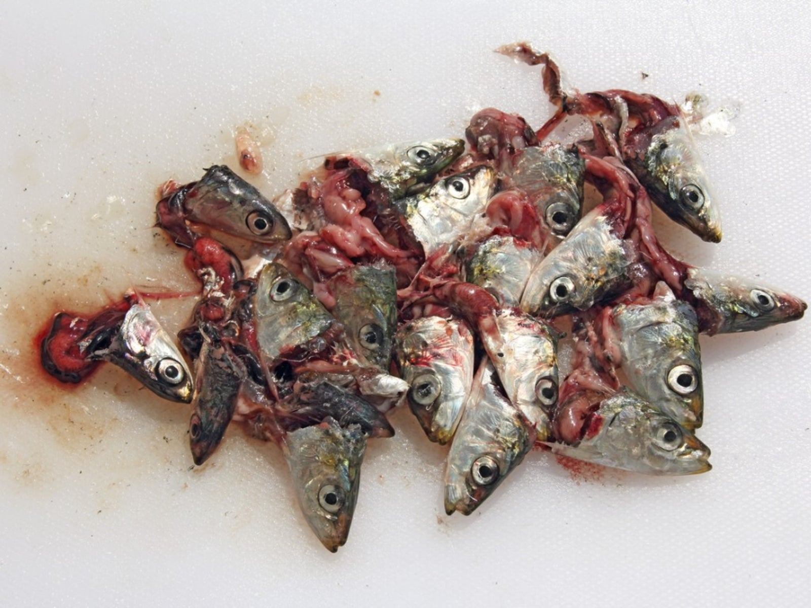

This page shares simple, affordable recipes to prepare nutritious meals for stray cats. Using low-cost or free ingredients like market scraps and pantry staples
A balanced mix of rice, pasta, or vegetables to provide energy, fiber, and essential vitamins for healthy digestion
A rich portion of chicken, fish, or eggs to supply the essential proteins and amino acids cats need to stay strong and healthy
 

Ask your local butcher for chicken or meat scraps — skin, cartilage, and small bits of meat. Most of the time, they give them for free since they would be thrown away anyway.
 

Visit a local fish market or talk to fishermen. Fish heads, bones, and leftover pieces are often discarded, but they make a great protein source for stray cats.